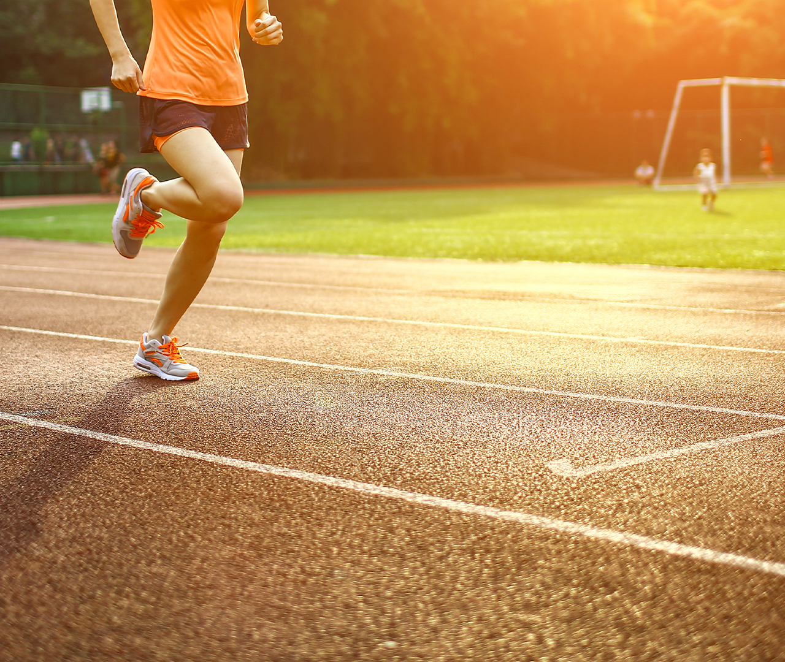

Somos uma organização não governamental destinada a fomentar práticas corporais com responsabilidade social e desta forma promover o desenvolvimento humano e a interação social.
As práticas corporais caracterizam-se por atividades corporais expressivas como: o esporte, a dança, a ginástica, o jogo e as lutas, possuem os significados que atribuímos a elas, a exemplo do esporte, o idealizamos como indutor de transformação social, desenvolvimento humano e empoderamento, sendo capaz de mover mentes,oportunizar conquistas e orientar escolhas.
Ao considerar a dimensão social destas práticas, o quadro de injustiças, exclusão e vulnerabilidade social que aflige todos os segmentos da sociedade, nos propomos a trabalhar como uma instituição facilitadora do acesso às práticas corporais, com propósito de colaborar com a sua democratização, favorecendo a construção de uma cidadania ativa e formações sociais alinhadas aos valores universais de justiça, liberdade e dignidade humana.
Desenvolver pessoas por meio de práticas corporais.
Proporcionar um ambiente colaborativo para o fomento das práticas corporais.
Promover o desenvolvimento humano e a interação social por meio de práticas corporais.